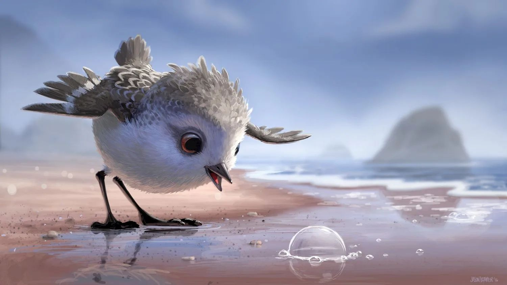
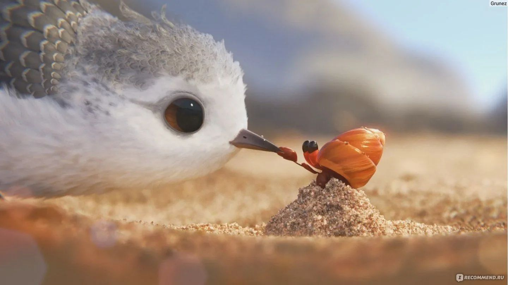

Признать страх
Не нужно притворяться, что тебе не страшно. Честность с собой — уже проявление силы.
Вдохновлено мультфильмом Pixar «Песочник»
Иногда целый океан кажется страшным. Но чтобы стать смелее, не нужно победить его сразу — достаточно сделать первый шаг.
Маленький песочник хочет научиться добывать еду у самого моря. Но шумные волны пугают его. Кажется, что безопаснее остаться подальше от воды.
Постепенно он замечает: страх не исчезает сам по себе, но любопытство и опыт помогают двигаться вперёд.
Маленькие открытия могут изменить всё. Посмотри на моменты, которые напоминают: смелость приходит, когда мы решаемся исследовать неизвестное.


Представь, что ты оказался на берегу вместе с маленьким песочником. Выбери, как поступить в непростых ситуациях.
ТВОЁ РЕШЕНИЕ
Она не всегда выглядит как подвиг. Иногда это тихое решение, которое никто, кроме тебя, не заметит.
Не нужно притворяться, что тебе не страшно. Честность с собой — уже проявление силы.
Ошибки и неудачи — часть пути. Каждый новый шаг помогает стать увереннее.
Смелость — это не всегда справляться в одиночку. Иногда важно довериться другим.
ТВОЙ МАЛЕНЬКИЙ ШАГ ИМЕЕТ ЗНАЧЕНИЕ
Вспомни одну вещь, которую ты давно боишься попробовать. Возможно, сегодня — хороший день для первого шага.